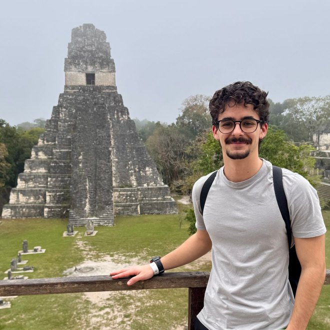

Mario Tomba Morillo
I am a second-year PhD student in the Department of Mathematics at the University of Chicago, working under the supervision of Marianna Csörnyei. My research interests lie broadly in geometric measure theory, particularly problems with a combinatorial flavor.
Before coming to the University of Chicago, I obtained my undergraduate degree in Mathematics from Dartmouth College, where I had the pleasure of being advised by Rosa Orellana.
You can contact me by email at mariotomba@uchicago.edu.
